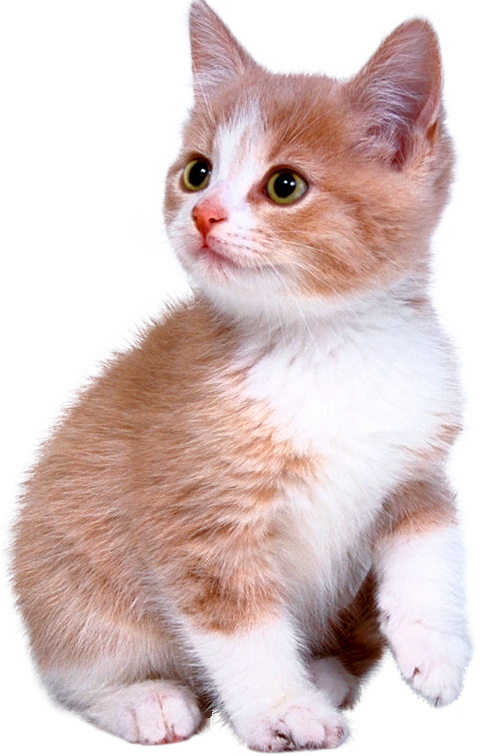

Какое у Вас тотемное животное?
Начать тестТотемное животное еще с древних времен считается оберегом, обладает свойствами талисмана и защищает от бед. Тест на тотемное животное может определить с каким зверем вы ассоциируете себя, находя какие-то общие черты в характере или поведении. Попробуйте на минутку задуматься и представить, с каким животным у вас имеется самая тесная связь? А теперь пройдите тест на тотемное животное и проверьте свои предположения! Приступим?